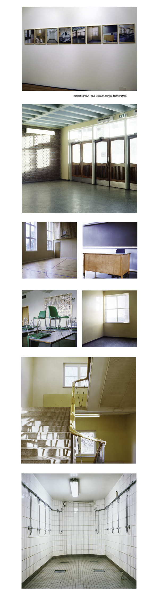

Photoseries 2000
"Katja Høst’s series Marienlyst skole (Marienlyst School) (2000) presents the artist’s childhood school, its rooms, emptied by the summer recess, bathed in sunlight. Although this may sound like a recipe for a sentimental journey back in time, it is in fact a stringent analysis of social-democratic institutional architecture. Høst photographs the school in a classic manner, emphasising light and functionality, almost as if the building were new and she were documenting it for an architecture journal. The series thus becomes a commentary on postwar Nordic social ideology and the ambivalent mixture of freedom and control that forms the heart of this heritage." (Jonas Ekeberg, Director of Preus Museum, in “Om fotografi”, Journal for Preus Museum.)
|  |